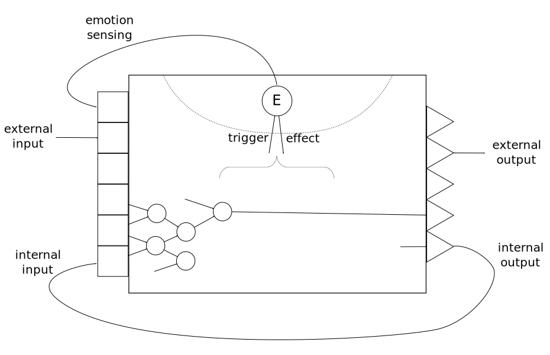

These are notes on managing global parameters in a family of cognitive systems introduced earlier. They are conveniently named emotions, although our definition is purely technical, broad, and doesn't attempt to emulate specific human emotions.
An emotion is a specific value or range of values of a global parameter of the system, which is built-in or inherited, affects the activity of the system, is triggered by some states of the system, and can be sensed by the system itself.
Sensing a combination of emotions and other input can result in what we would call feelings, which are embodied by active nodes like any other perceived concept in the system.
In the diagram below, the circled \(E\) represents the global parameter in the state corresponding to an emotion \(E\).

Unlike input nodes (sensors) or output nodes (actuators) which are created by IO modules, global parameters cannot be plugged-in using a standard API. Their value is modified by states of the system that are not accessible by IO modules and they have an effect on how the system behaves internally.
Examples of possible trigger factors:
Examples of possible effects:
Unlike other neuron-like nodes in the system, dynamic global parameters resulting in emotions have the following properties: